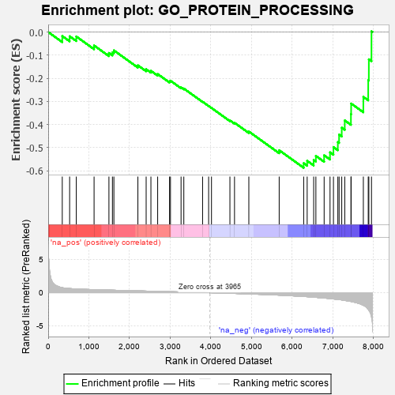
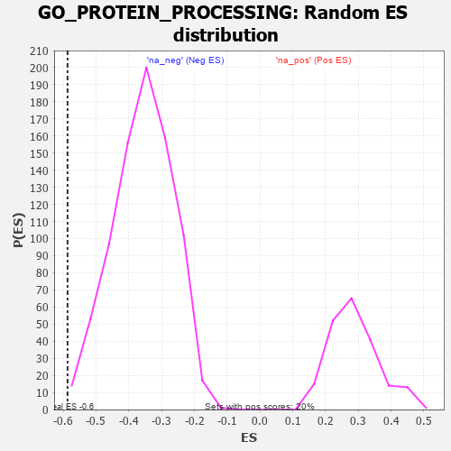

| | | Dataset | 7d |
| Phenotype | NoPhenotypeAvailable |
| Upregulated in class | na_neg |
| GeneSet | GO_PROTEIN_PROCESSING |
| Enrichment Score (ES) | -0.5868537 |
| Normalized Enrichment Score (NES) | -1.643682 |
| Nominal p-value | 0.002503129 |
| FDR q-value | 0.064729534 |
| FWER p-Value | 0.999 |
Table: GSEA Results Summary

Fig 1: Enrichment plot: GO_PROTEIN_PROCESSING
Profile of the Running ES Score & Positions of GeneSet Members on the Rank Ordered List
| PROBE | GENE SYMBOL | GENE_TITLE | RANK IN GENE LIST | RANK METRIC SCORE | RUNNING ES | CORE ENRICHMENT | | 1 | CLN5 | | | 346 | 0.751 | -0.0174 | No |
| 2 | HTRA2 | | | 527 | 0.621 | -0.0184 | No |
| 3 | ATP23 | | | 691 | 0.562 | -0.0193 | No |
| 4 | SRC | | | 1128 | 0.459 | -0.0583 | No |
| 5 | SPCS2 | | | 1493 | 0.391 | -0.0905 | No |
| 6 | SDE2 | | | 1579 | 0.378 | -0.0880 | No |
| 7 | BIRC8 | | | 1615 | 0.372 | -0.0795 | No |
| 8 | HM13 | | | 2205 | 0.276 | -0.1441 | No |
| 9 | OMA1 | | | 2408 | 0.244 | -0.1610 | No |
| 10 | SPG7 | | | 2525 | 0.223 | -0.1678 | No |
| 11 | DDI2 | | | 2691 | 0.200 | -0.1816 | No |
| 12 | PCSK5 | | | 2983 | 0.152 | -0.2130 | No |
| 13 | PISD | | | 3006 | 0.149 | -0.2106 | No |
| 14 | MIPEP | | | 3266 | 0.111 | -0.2394 | No |
| 15 | RFX4 | | | 3334 | 0.099 | -0.2444 | No |
| 16 | SPCS1 | | | 3795 | 0.028 | -0.3013 | No |
| 17 | KLK13 | | | 3944 | 0.003 | -0.3199 | No |
| 18 | PARP1 | | | 4014 | -0.010 | -0.3282 | No |
| 19 | LRRK2 | | | 4467 | -0.087 | -0.3822 | No |
| 20 | CMA1 | | | 4580 | -0.114 | -0.3923 | No |
| 21 | CASP1 | | | 4932 | -0.185 | -0.4301 | No |
| 22 | CASP8 | | | 5678 | -0.369 | -0.5111 | No |
| 23 | IFT52 | | | 6280 | -0.566 | -0.5671 | Yes |
| 24 | BIRC3 | | | 6366 | -0.603 | -0.5568 | Yes |
| 25 | ACE | | | 6526 | -0.674 | -0.5533 | Yes |
| 26 | CLN3 | | | 6580 | -0.699 | -0.5355 | Yes |
| 27 | C2CD3 | | | 6783 | -0.802 | -0.5330 | Yes |
| 28 | DISP1 | | | 6928 | -0.887 | -0.5201 | Yes |
| 29 | ECE2 | | | 7012 | -0.945 | -0.4976 | Yes |
| 30 | FKRP | | | 7120 | -1.009 | -0.4758 | Yes |
| 31 | SPON1 | | | 7151 | -1.035 | -0.4435 | Yes |
| 32 | KLKB1 | | | 7216 | -1.090 | -0.4135 | Yes |
| 33 | ASTL | | | 7290 | -1.159 | -0.3822 | Yes |
| 34 | CASP2 | | | 7442 | -1.322 | -0.3551 | Yes |
| 35 | GGT1 | | | 7447 | -1.329 | -0.3092 | Yes |
| 36 | CASP3 | | | 7747 | -1.902 | -0.2804 | Yes |
| 37 | ECE1 | | | 7867 | -2.498 | -0.2082 | Yes |
| 38 | CHAC1 | | | 7882 | -2.633 | -0.1180 | Yes |
| 39 | XIAP | | | 7947 | -3.696 | 0.0030 | Yes |
Table: GSEA details [plain text format]

Fig 2: GO_PROTEIN_PROCESSING: Random ES distribution
Gene set null distribution of ES for GO_PROTEIN_PROCESSING